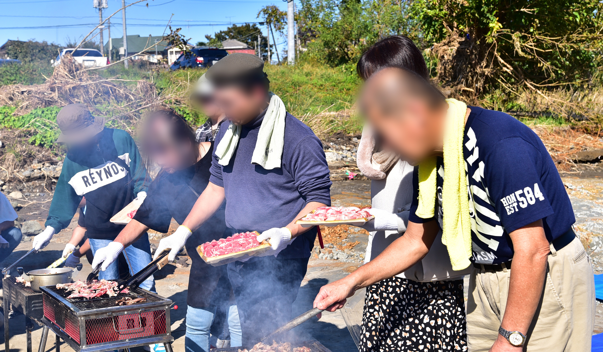
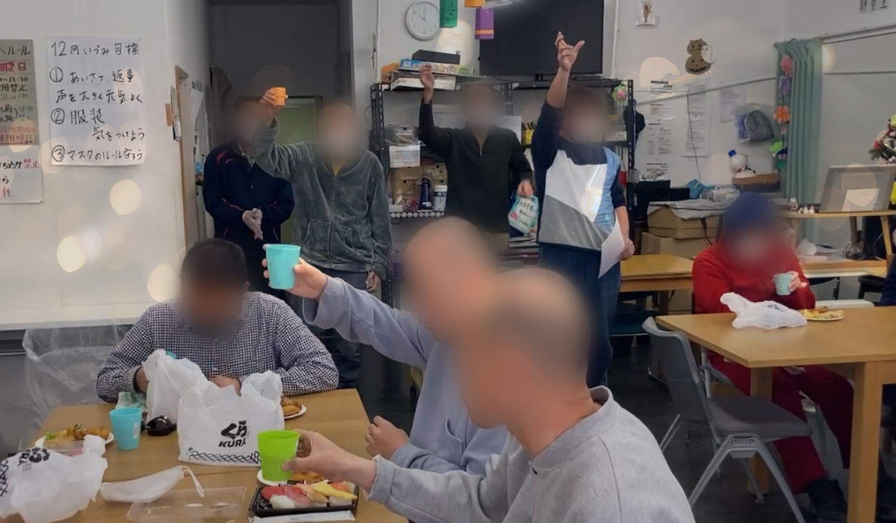
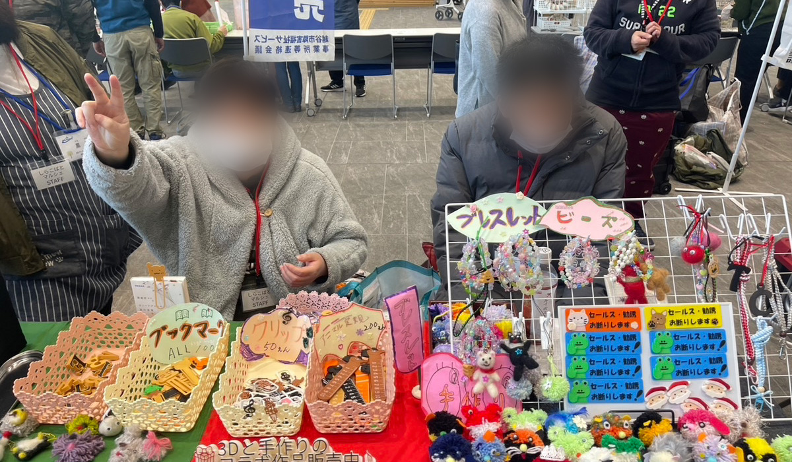
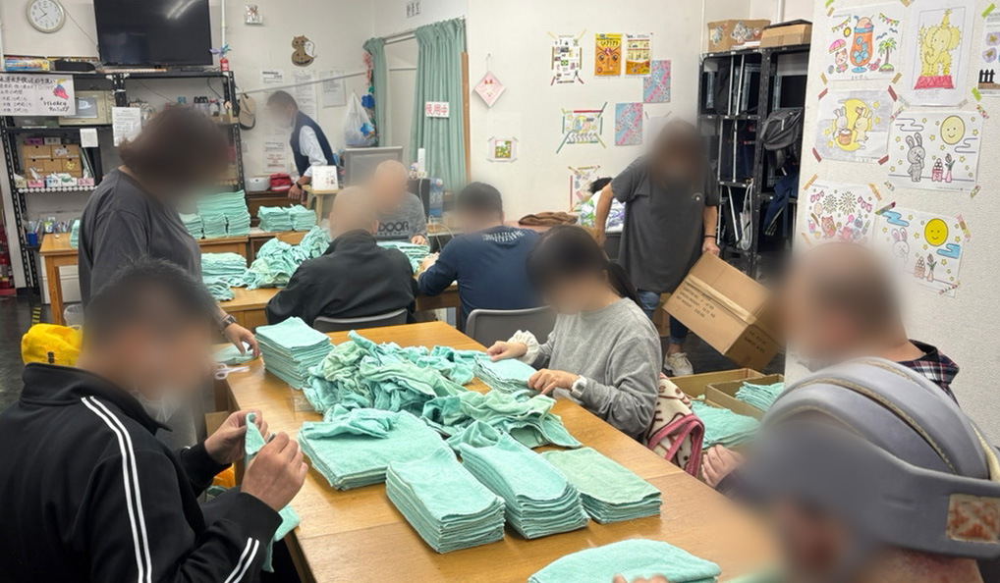
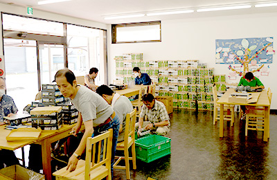

空あり
日中活動の場として、軽作業を中心に行事なども行っています。
個々のレベルにあった作業や役割を担うことにより、社会性の育成と自立心を育てます。
その上で、ご利用者様と活動の幅を拡げていき地域に根差した活動を目指します。
主に解体・分別作業、缶のリサイクル、制作活動などの作業をしています。
またクリスマス会やBBQなどのイベントも定期的に実施しています。

利用者様の特性に応じた食事の提供や支援を行っています。
また食事マナーや偏食指導なども行い、社会性の向上を育成します。
日々のバイタルチェックだけでなく、嘱託医による往診や専属看護師による健康管理を実施しています。
施設側で服薬管理も行っていますので、お薬の管理が苦手な方にもご安心いただけます。
またご自身で外出が困難な方には、通院の同行も行っています。
自立支援、受給者証、保険書類の更新等、行政手続きもサポートしています。
最新の3Dプリンターと手作りの技術を組み合わせ、可愛いオリジナルグッズを制作・販売しています。自分の手がけた作品が形になる達成感を味わえます。
手先を使った丁寧な作業を通じて、集中力や作業リズムを養います。簡単な工程からスタートできるため、達成感を得ながら日々の自立に向けたステップアップを目指せます。
| 障害支援区分6 | 1,278単位 |
|---|---|
| 障害支援区分5 | 959単位 |
| 障害支援区分4 | 680単位 |
| 障害支援区分3 | 610単位 |
| 障害支援区分2以下 | 559単位 |
| 初日より30日間 | 30単位 |
|---|
| 4回/月まで | 94単位 |
|---|
| 片道 | 27単位 |
|---|